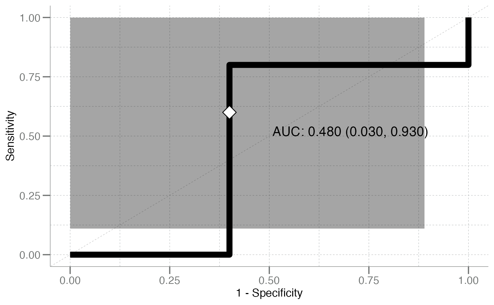

Fit Weighted k-Nearest Neighbor Classifier
fit_kknn.RdWrapper for fitting weighted k-nearest neighbor classifiers.
Arguments
- formula
A
formulaclass object, specifying the model to be fitted (e.g. \(response ~ x_1 + x_2 + ... + x_n\)).- train
Matrix or data frame of training set cases.
- test
Matrix or data frame of test set cases.
- k_neighbors
See
kinkknn::kknn().- distance
numeric(1). Parameter of Minkowski distance.Manhattan = 1andEuclidean = 2.- kernel
Kernel to use. Possible choices are "rectangular" (which is standard unweighted knn), "triangular", "epanechnikov" (or beta(2,2)), "biweight" (or beta(3,3)), "triweight" (or beta(4,4)), "cos", "inv", "gaussian", "rank" and "optimal".
- ...
Additional arguments passed to
kknn::kknn().
Value
A k-nearest neighbors model, as returned by kknn::kknn(),
with a "Response" variable, classes, and function parameters train,
k, distance, kernel, as well as the function call (call)
added as entries to the list.
See also
The fit*() family:
fit_gbm(),
fit_logistic(),
fit_nb()
Examples
# Use fake training data from iris data set
train_idx <- sample(nrow(tr_iris), 90L) # random 90% training
test_df <- tr_iris[-train_idx, ]
kknnfit <- fit_kknn(Species ~ ., train = tr_iris[train_idx, ], test = test_df)
pos <- get_pos_class(kknnfit)
pred <- calc_predictions(kknnfit) # internal test predictions
pred
#> # A tibble: 10 × 3
#> pred_class prob_setosa prob_virginica
#> <chr> <dbl> <dbl>
#> 1 virginica 0.314 0.686
#> 2 setosa 0.522 0.478
#> 3 virginica 0.155 0.845
#> 4 setosa 0.593 0.407
#> 5 setosa 0.709 0.291
#> 6 setosa 0.672 0.328
#> 7 virginica 0.445 0.555
#> 8 setosa 0.956 0.0444
#> 9 virginica 0.0268 0.973
#> 10 virginica 0.444 0.556
# Confusion matrix
calc_confusion(test_df$Species, pred$prob_virginica, pos_class = pos) |>
summary()
#> ══ Confusion Matrix Summary ═══════════════════════════════════════════
#> ── Confusion ──────────────────────────────────────────────────────────
#>
#> Positive Class: virginica
#>
#> Predicted
#> Truth setosa virginica
#> setosa 3 2
#> virginica 2 3
#>
#> ── Performance Metrics (CI95%) ────────────────────────────────────────
#>
#> # A tibble: 10 × 5
#> metric n estimate CI95_lower CI95_upper
#> <chr> <int> <dbl> <dbl> <dbl>
#> 1 Sensitivity 5 0.6 0.110 1
#> 2 Specificity 5 0.6 0.110 1
#> 3 PPV (Precision) 5 0.6 0.110 1
#> 4 NPV 5 0.6 0.110 1
#> 5 Accuracy 10 0.6 0.254 0.946
#> 6 Bal Accuracy 10 0.6 0.254 0.946
#> 7 Prevalence 10 0.5 0.146 0.854
#> 8 AUC 10 0.52 0.167 0.873
#> 9 Brier Score 10 0.370 0.0284 0.711
#> 10 MCC NA 0.2 NA NA
#>
#> ── Additional Statistics ──────────────────────────────────────────────
#>
#> F_measure G_mean Wt_Acc
#> 0.6 0.6 0.6
# plot ROC
plot_emp_roc(test_df$Species, pred$prob_virginica, pos)
#> Warning: Using `size` aesthetic for lines was deprecated in ggplot2 3.4.0.
#> ℹ Please use `linewidth` instead.
#> ℹ The deprecated feature was likely used in the libml package.
#> Please report the issue to the authors.
#> Warning: The `size` argument of `element_line()` is deprecated as of ggplot2
#> 3.4.0.
#> ℹ Please use the `linewidth` argument instead.
#> ℹ The deprecated feature was likely used in the libml package.
#> Please report the issue to the authors.
